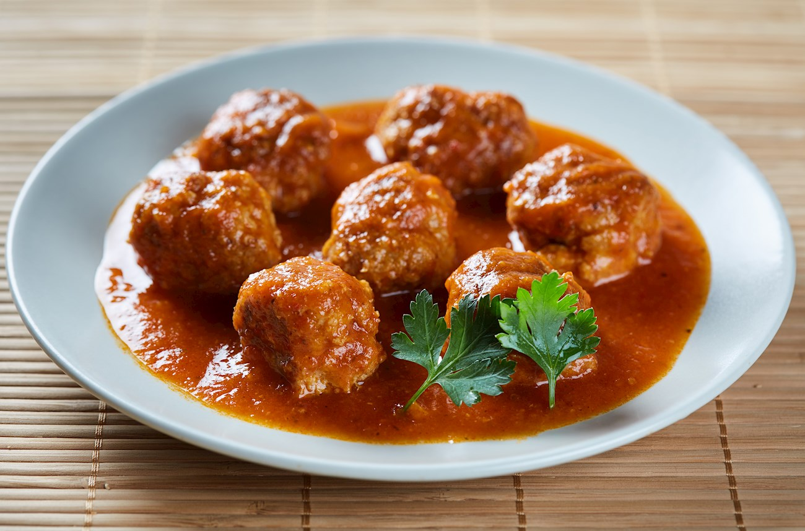

Kjufteta po Chirpanski

This classic Bulgarian dish consisting of meatballs in rich tomato sauce is an authentic delicacy from the city of Chirpan.
The region around the city is famous for the production of numerous vegetables,
so it is no surprise that kjufteta po Chirpanski uses lots of them.
The meatballs are typically prepared with ground meat, onions, eggs, cumin, salt, pepper, and flour,
while the sauce uses a variety of vegetables and spices such as onions, tomatoes, celery, paprika, parsley, bell peppers, and garlic.
It is believed that almost every home in Chirpan has its own version of the dish and uses their own combination of herbs and spices.
Ingredients
For the meatballs
- 600g minced meat*
- 1 medium onion, finely chopped
- 1 egg handful fresh parsley leaves
- chopped 2 tsp savoury**
- 1 tsp cumin Salt Freshly ground black pepper
- 2-3 tbsp all-purpose flour
*The classic recipe calls for mixed minced meat, typically 60% pork and 40%beef.
**Better use fresh savoury, if available, but dry is also good.
For the sauce
- 3 tbsp sunflower oil
- 1 onion, finely chopped
- 1 clove of garlic
- 2 big tomatoes, peeled anddiced
- 1 small celeriac, peeled and diced
- 2 tsp sweet paprika
- 1 tbsp fresh parsley leaves, chopped
- 1 tbsp fresh celery leaves, chopped
- 0,5l vegetable stock
Optional
- 2 potatoes, diced
- 1 green sweet pepper, diced
Steps
Making the meatballs
- First prepare the meatballs – add to the meat onion, egg and all the spices. Mix everything well and with wet hands form balls – usually they are the size of a ping pong ball.
- Roll them in flour, so they are thoroughly covered. According to our culinary tradition, if the minced meat mix is too sticky at this point, you can add some bread crumbs – for this quantity a slice of bread will be enough.
Making the tomato sauce
- In a big heavy-based saucepan heat the oil over medium heat.
- First add onion and garlic and gently fry them until just wilted, for about 2 minutes.
- Add diced pepper, stir and fry for 2-3 more minutes.
- Take off the fire, add paprika and stir well – this is made to avoid burning the paprika.
- Pour in the hot stock, add celeriac and potatoes (if used) and return on medium heat.
- In another saucepan heat salted water.
- When hot, but not vigorously boiling add the meatballs and boil for just 5 minutes and take them out with a slotted spoon.
- When the potatoes are almost done, in about 7-8 minutes, add meatballs and tomatoes and cook for 10 more minutes
- Before serving add fresh herbs
- Serve warm.